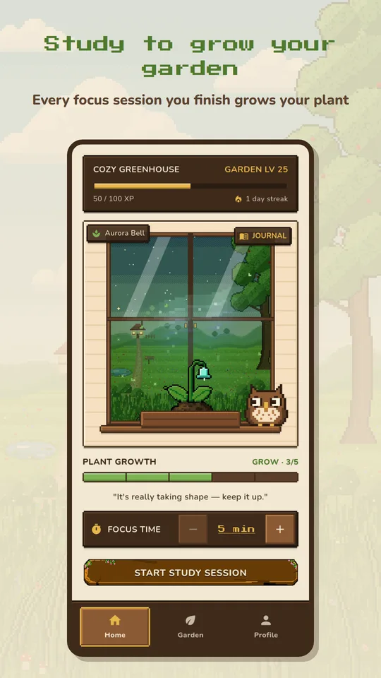
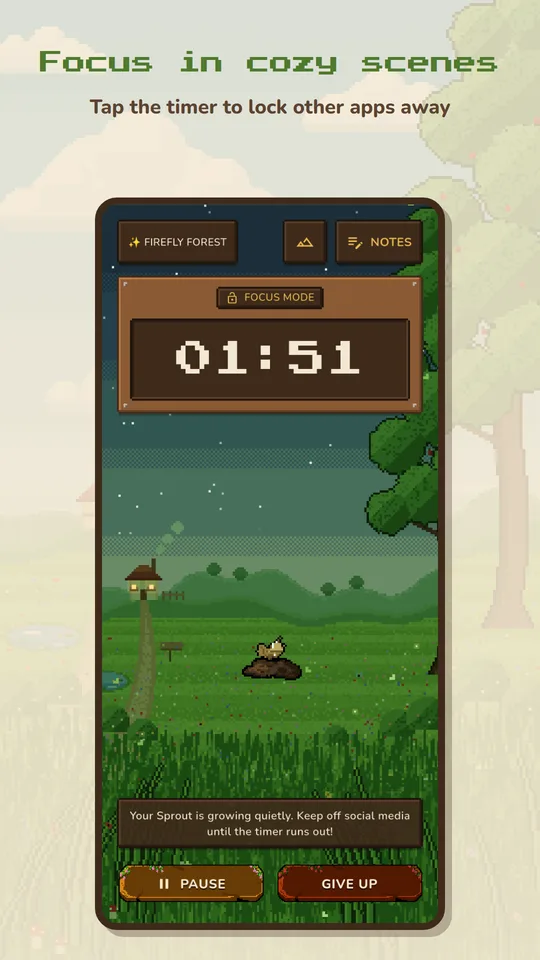
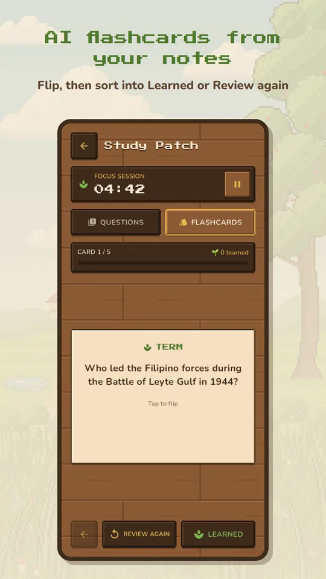

Fig. 01 · Mobile app · 2026
kuwaGO
A cozy pixel-art study garden. Finish a Pomodoro focus session and your plant grows; give up and it wilts. AI turns your own notes into quizzes and flashcards.
- My part Concept, game rules, Figma design, hand-drawn pixel art, Firebase setup and user testing. Built with AI-assisted development.
- Proof Built in 30 days, shipped to 18 testers, 72 automated tests. The Deep Focus feature came straight from a tester's request.


